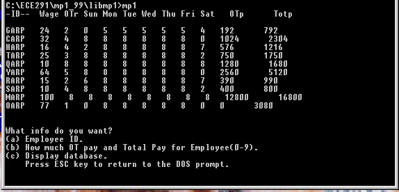

| ECE 291 | Computer Engineering II | Kalbarczyk, Fall 1999 |
| Assigned | Tuesday 9/7/99 |
| Due Date | Tuesday 9/21/99 |
| Purpose | Learn to write assembler code. Use looping and branching. Perform basic string and file manipulations. |
| Points | 50 |
Database systems play an integral part in the world of business. As engineers, we play the part of designing and implementing the functionalities of a real world database system. A simple example is the following. Consider a workplace where the empl oyees are given ID cards to scan in when they arrive for work and when they leave for home. The remote unit i.e. the card scanner and time clock unit would send the employee ID number and the time in and time out information to a server. This server w ould then access its database and record the hours accordingly. When payday comes, the system would just calculate the pay based on stored values for hourly pay and print out paychecks for the employees.
In this machine problem, you will deal with a fictitious database which contains a set of data records. Your program will calculate the overtime and total pay for the employees in this database. You will then display the entire contents of the databa se along with the update values of overtime and total pay. You will also implement functions capable of extracting specific information from the database.
This table depicts how the database records are stored in the data file.
|
Field |
ID |
Wage |
OT_rate |
Days |
OT_pay |
Total_pay |
|
Data |
AAAA$ |
B |
B |
BBBBBBB |
W |
W |
|
Offset |
0 |
5 |
6 |
7-13 |
14-15 |
16-17 |
Where:
'GARP','$',24,2,4,8,8,8,8,8,4,0,0,0,0
You compute the overtime pay (OT_Pay) and total pay (Total_Pay) based on these equations:
The following screen capture depicts the program as it is first executed. It prints to the screen the database records with the correctly calculated values for OT and Total pay. Then, it provides the user with options to choose from. For this progra m, do not worry about the spacing as long as your output to screen is correct.
The database file to be used in the calculations and printed out is read into memory for manipulation using the INCLUDE directive. This data will start at the location pointed to by the variable: time. This can be used as the offset for the beginning of the database manipulation. Each data record will be printed out and used to determine the values for OT pay and Total pay.
The database can be thought of as a large array where characters and values are stored in continuous bytes in memory. You will update the two word fields with your calculated values. Since you will be using BINASC and DSPMSG functions from LIB291.LIB, do not worry about lining up the spacings of your output. What is important is that you demonstrate your knowledge of looping, branching, and simple math operations with respect to addressing in assembly. The procedures to print the header, print three spaces, print a carriage return and line feed, print a display menu and loop through printing the records are given to you. They can be used freely without penalty. These are very straightforward routines. If you have questions, ask a TA.
In this machine problem, the main procedure is provided for you; however, you must write the code to replace the library routines. You will replace these procedures from the LIBMP1 library by commenting out the statements calling the Lib routine and adding your code. Each routine that you write should match the output of the library code exactly. Each of the function calls and their functionality is described below in the Subroutines section. The best way to get a feel for the program is to run it to see how it is supposed to operate. You can also edit the test file to see how various changes will affect the program execution.
Your program is required to:
The program can be run by typing mp1 at the command prompt. The data file to be used is named TIME.DTA.
This assignment has seven procedures. You will receive credit by replacing each of these seven procedures listed below with your own code.
| CalcOT |
|
CalcTP |
|
| PrintID |
|
| PrintD |
|
| PrintT |
|
| HandleA |
|
| HandleB |
|
PAGE 70, 140
TITLE MP1.ASM Your Name Today's Date
COMMENT #
This program computes the weekly paychecks of employees at UIUC
based on their respective hourly wage, the number of hours that
they have logged, and overtime wage if it applies.
#
;********** SECTION 1: Define Constants ****************************
CR EQU 0Dh
LF EQU 0Ah
SPA EQU 20h
RECLEN EQU 18 ; Length of each record is constant
;********** SECTION 2: Declare External Procedures *****************
; Functions in LIB291.LIB
; These functions are free to be used by you.
extrn binasc:near, dspmsg:near, dosxit:near, dspout:near
extrn kbdine:near
; Complete descriptions of the LIB291 functions can be
; found in your lab manuals. Use these functions for
; displaying output on the screen.
extrn mp1xit:near ; Terminates program
; Functions in LIBMP1.LIB
; You will need to write these functions for this program.
extrn LIBCalcOT:near
extrn LIBCalcTP:near
extrn LIBPrintD:near
extrn LIBPrintT:near
extrn LIBPrintID:near
extrn LIBHandleA:near
extrn LIBHandleB:near
;********* SECTION 3: Define Stack Segment **************************
stkseg segment stack ; STACK SEGMENT
db 64 dup ('STACK ')
stkseg ends
;********* SECTION 4: Define Code Segment **************************
cseg segment public 'CODE'
assume cs:cseg, ds:cseg, ss:stkseg, es:nothing
;********* SECTION 5: Declare Variables for Main Procedure **********
; The format for the time worksheet database:
; Each record is 18 bytes long.
; Emp_ID: 4 ASCII letters or numbers + '$' = 5 bytes
; Wage: 1-byte unsigned integer = 1 byte
; OTr: 1-byte unsigned integer = 1 byte
; Sun...Sat: 1-byte unsigned integers (7 elements) = 7 bytes
; OTp: 2-byte unsigned integer = 2 bytes
; Totp: 2-byte unsigned integer = 2 bytes
;
; ID,'$',Wage,OT_rate,Sun,Mon,Tue,Wed,Thu,Fri,Sat,OT_pay,Total_pay
INCLUDE time.dta
; INCLUDE places contents of file time.dta here.
; This file has two variables defined: time and numrec.
;
; time is an array of 18-byte records.
; numrec is defined as a 16-bit integer that stores the number of records.
; head is the HEADER that needs to be the first line printed out.
head db '-ID-- '
db ' Wage OTr Sun Mon Tue Wed Thu Fri Sat OTp Totp',CR,LF,'$'
Hdr2 db 'Emp_ID OT_Pay Total_Pay',CR,LF,'$'
enter db CR,LF,'$' ; Mimics hitting the enter key
space db SPA,SPA,SPA,'$' ; Types 3 Spaces
Menu db CR,LF,'What info do you want?',CR,LF
db '(a) Employee ID.',CR,LF
db '(b) How much OT pay and Total Pay for Employee(0-9).',CR,LF
db '(c) Display database.',CR,LF
db ' Press ESC key to return to the DOS prompt.',CR,LF,'$'
EmpMsg db 'Enter the number (0-9) of the employee that you want.',CR,LF,'$'
InvalidMesg db 'Invalid Input. Choose Again.',CR,LF,'$'
buff db 7 dup(?) ; Temporary buffer used by BINASC lib291 call
;********** SECTION 6: Main Procedure ****************************
main proc far
mov ax,cseg
mov ds,ax ; Initialize ds = cs
call CalcOT
call CalcTP
Refresh:
call PrintHdr
call PrintRec
call Ent ; Prints CR and LF to screen
Display:
call DisplayMenu;
call kbdine
call Ent
cmp al,1Bh ; Was Escape key pressed?
je Exit
cmp al,'a'
jne NOTa
call HandleA
jmp Display
NOTa: cmp al,'b'
jne NOTab
call HandleB
jmp Display
NOTab:
cmp al,'c'
jne InvalidIO
jmp Refresh
InvalidIO:
call InvalidInput
call Ent
jmp Display
Exit: call mp1xit
main endp
; Procedure to print three spaces based on definition of space
PrintSpace PROC NEAR
mov dx, OFFSET space
call dspmsg
ret
PrintSpace ENDP
; Procedure to print CR,LF
Ent PROC NEAR
mov dx, OFFSET enter
call dspmsg
ret
Ent ENDP
; Procedure to print Hdr2 for HandleB function
PrintHdr2 PROC NEAR
call Ent
mov dx, OFFSET Hdr2
call dspmsg
ret
PrintHdr2 ENDP
; Procedure to display Menu message
DisplayMenu PROC NEAR
mov dx, OFFSET Menu
call dspmsg
call Ent
ret
DisplayMenu ENDP
InvalidInput PROC NEAR
call Ent
mov dx, OFFSET InvalidMesg
call dspmsg
ret
InvalidInput ENDP
PrintHdr PROC NEAR
mov dx, cs:OFFSET head
call dspmsg
call Ent
ret
PrintHdr ENDP
; PLEASE NOTE: You may choose to use this skeleton code for PrintRec to print
; your database records; but you are forewarned that bp and di
; are changed in the loop. So you can either incorporate
; them into your procedures or simply replace PrintRec
; with your own code to print out the database records.
; Just comment out the code in PrintRec and replace with your own.
; Also, do not worry to much about the spacing as long
; as your output correctly reflects the database records.
PrintRec PROC NEAR
mov di,0
PrintL:
call PrintID
call PrintD
call PrintT
call Ent
inc di
cmp di, numrec
jnz PrintL
ret
PrintRec ENDP
;******************************************************************
;*************** You need to code these functions ****************
;******************************************************************
CalcOT PROC NEAR
call LIBCalcOT ; Comment this function out; Insert your code here.
ret
CalcOT ENDP
CalcTP PROC NEAR
call LIBCalcTP ; Comment this function out; Insert your code here.
ret
CalcTP ENDP
HandleA PROC NEAR
call LIBHandleA ; Comment this out. Insert your function here.
ret
HandleA ENDP
HandleB PROC NEAR
call LIBHandleB ; Comment this out. Insert your function here.
ret
HandleB ENDP
PrintID PROC NEAR
call LIBPrintID ; Comment this out. Insert your function here.
ret
PrintID ENDP
PrintD PROC NEAR
call LIBPrintD ; Comment this out. Insert your function here.
ret
PrintD ENDP
PrintT PROC NEAR
call LIBPrintT ; Comment this out. Insert your function here.
ret
PrintT ENDP
cseg ends
end main